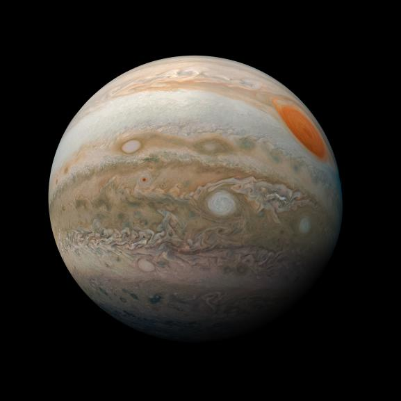

Júpiter, o maior planeta do nosso Sistema Solar, é uma imponente esfera gasosaque intriga e fascina astrônomos e entusiastas do espaço há séculos. Com suamassa colossal e aparência majestosa, Júpiter desempenha um papel fundamentalna dinâmica do nosso sistema planetário. Neste artigo, mergulharemos nascaracterísticas e curiosidades desse gigante gasoso.
Image source: NASA
Uma das características mais marcantes de Júpiter é a Grande Mancha Vermelha, uma gigantesca tempestade que ocorre na sua atmosferahá séculos. A Grande Mancha Vermelha é um fenômeno persistente e tem sido observada desde o século XVII. Essa tempestade é tão grande que poderia engolir três Terras. Apesar de sua longevidade, a causa exata de sua formação ainda éobjeto de estudo e pesquisa.
Júpiter também possui um sistema de anéis, embora menos proeminente do que os anéis de Saturno. Esses anéis são compostos principalmente de partículas de poeira e pequenos fragmentos rochosos, e sua estrutura pode ser um resultado da colisão de cometas e asteroides com as luasde Júpiter.
Além dos anéis, Júpiter é cercado por um vasto conjunto de luas. Atualmente, mais de 80 luas foram identificadas ao redor do planeta gigante. Quatro das luas de Júpiter, conhecidas como as "luas galileanas" (Io, Europa, Ganimedes e Calisto), foram descobertas por Galileu Galilei em 1610. Essas luas são de grande interesse científico, pois podem abrigar oceanos subterrâneos e potencialmente condições propícias para a existência de vida.

Image source: NASA
Júpiter tem sido objeto de estudo e exploração pelas agências espaciais há várias décadas. A sonda espacial Voyager 1 fez uma passagem próxima por Júpiter em 1979, fornecendo as primeiras imagens detalhadas do planeta e suas luas. Mais tarde, as missões Galileo, Juno e outras trouxeram dados cruciais sobre a estrutura interna de Júpiter, seu campo magnético e suas tempestades.
Júpiter é verdadeiramente um colosso celestial que continua a intrigar os cientistas e entusiastas do espaço. Sua massa, tamanho e complexidade atmosférica o tornam um laboratório natural para entender a formação e a evolução de planetas gasosos. Além disso, suas luas e tempestades proporcionam uma visão fascinante da dinâmica planetária e do potencial de mundos alienígenas. À medida que a exploração espacial continua avançando, é provávelque Júpiter ainda reserve muitas surpresas e segredos a serem revelados.